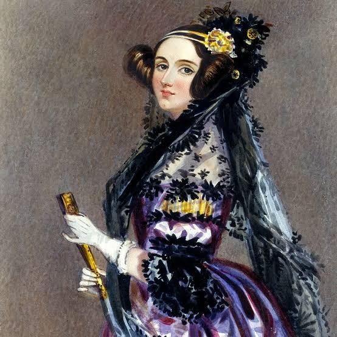
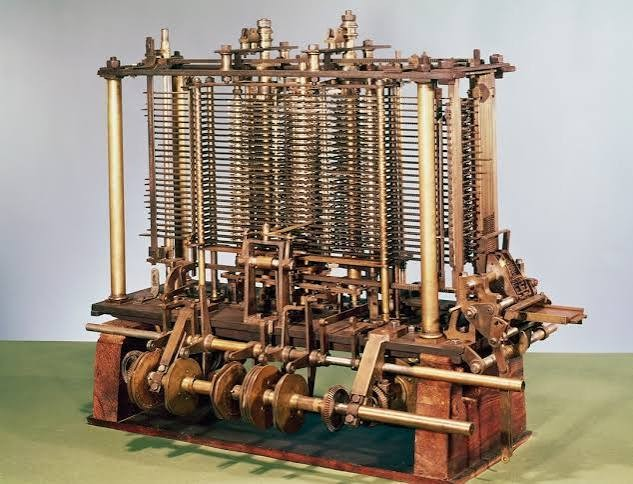
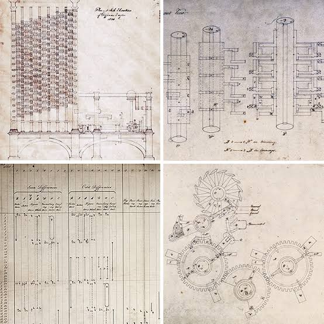
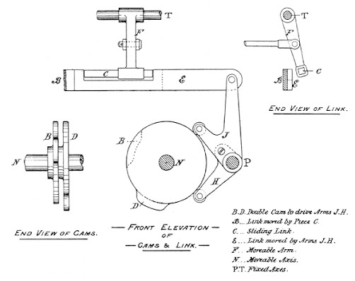
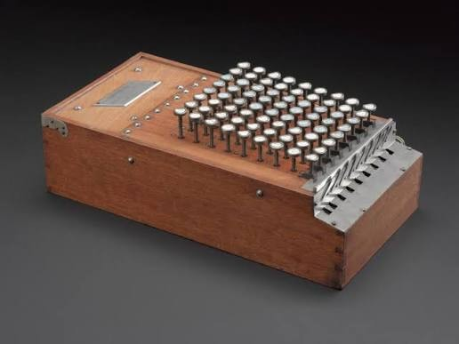
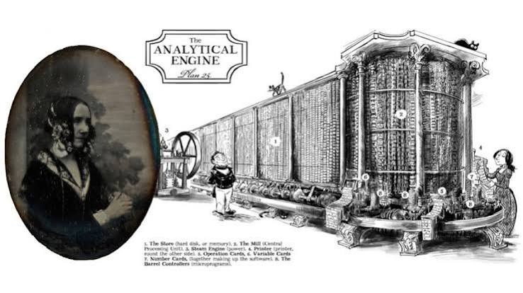
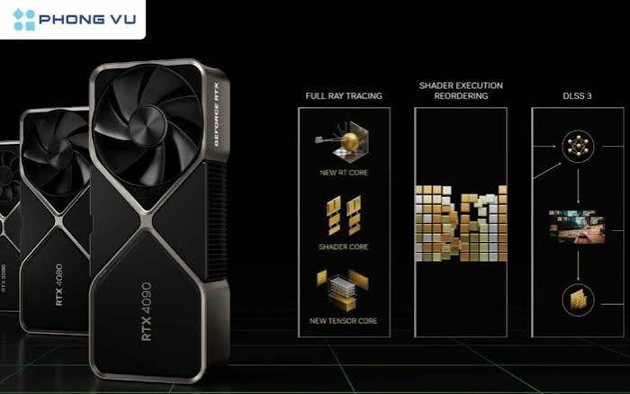

Thư viện tư liệu, Nguồn tham khảo & Phân công nhiệm vụ
Phần 1: Thư viện hình ảnh và video tư liệu
Bộ sưu tập 08 hình ảnh tư liệu minh họa cho cuộc đời, cỗ máy Phân tích, thuật toán và sự phát triển của công nghệ tính toán:







Video tư liệu về Ada Lovelace
Nếu video nhúng không phát được, bạn có thể mở các video tài liệu về Ada Lovelace trên YouTube.
Phần 2: Nguồn tham khảo thông tin đáng tin cậy
Các nguồn dưới đây được dùng để đối chiếu thông tin về tiểu sử, ghi chú năm 1843 và bối cảnh lịch sử của Ada Lovelace.
| Tên bài viết / tài liệu | Tổ chức / cơ quan | Đường liên kết trực tuyến |
|---|---|---|
| Ada Lovelace | Computer History Museum | Đọc bài viết |
| Ada Lovelace 1815–1852 | Science Museum Group Collection | Xem hồ sơ nhân vật |
| Imagining AI – Babbage & Lovelace | History of Science Museum, University of Oxford | Đọc bài viết |
| Sketch of the Analytical Engine invented by Charles Babbage, with Notes by Ada Lovelace (1843) | Classics in the History of Psychology, York University | Đọc văn bản gốc |
| Ada Lovelace: visionary of the computer age | Science Museum | Đọc bài viết |
Lưu ý về nguồn ảnh: Các tệp ảnh trong ZIP không chứa thông tin tác giả hoặc đường dẫn gốc trong metadata. Nếu giáo viên yêu cầu ghi nguồn riêng cho từng ảnh, nhóm cần bổ sung liên kết trang đã tải từng ảnh và thông tin giấy phép phù hợp; không nên đoán nguồn ảnh.
Phần 3: Bảng phân công nhiệm vụ thành viên nhóm
| Thành viên | Công việc chính | Công việc hỗ trợ |
|---|---|---|
| Đặng Hoàng Thái (Máy số 18) | Thiết kế toàn bộ kiến trúc mã nguồn HTML 8 trang, xây dựng tệp style.css đồng bộ (Card, Timeline, Gallery, Flexbox, Grid, Responsive). | Tuyển chọn hình ảnh tư liệu chất lượng cao không bị lỗi, kiểm tra liên kết trang và cấu hình tối ưu trên thiết bị di động. |
| Võ Bảo Tiên (Máy số 18) | Biên soạn nội dung chi tiết bám sát hướng dẫn dự án, viết phần phân tích trọng tâm tác động và cảm nhận cá nhân sâu sắc. | Tổng hợp và kiểm chứng nguồn tham khảo quốc tế, kiểm tra chính tả, đóng gói tệp .zip nộp bài đúng quy định. |